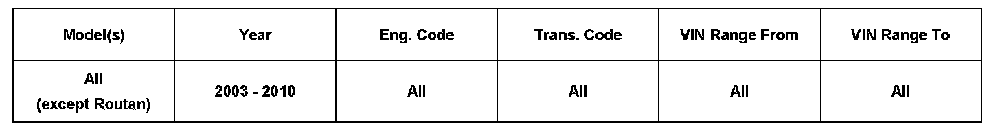
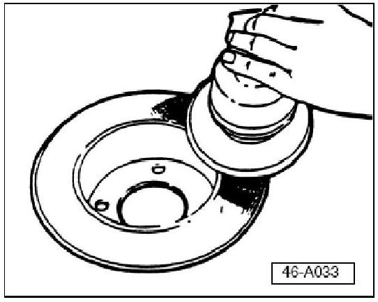
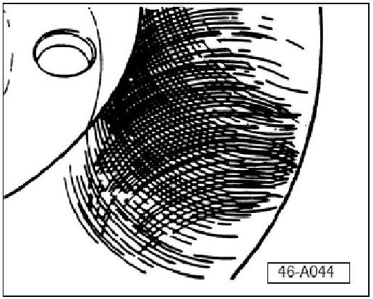
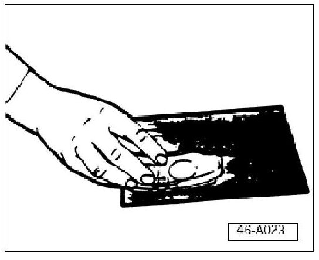
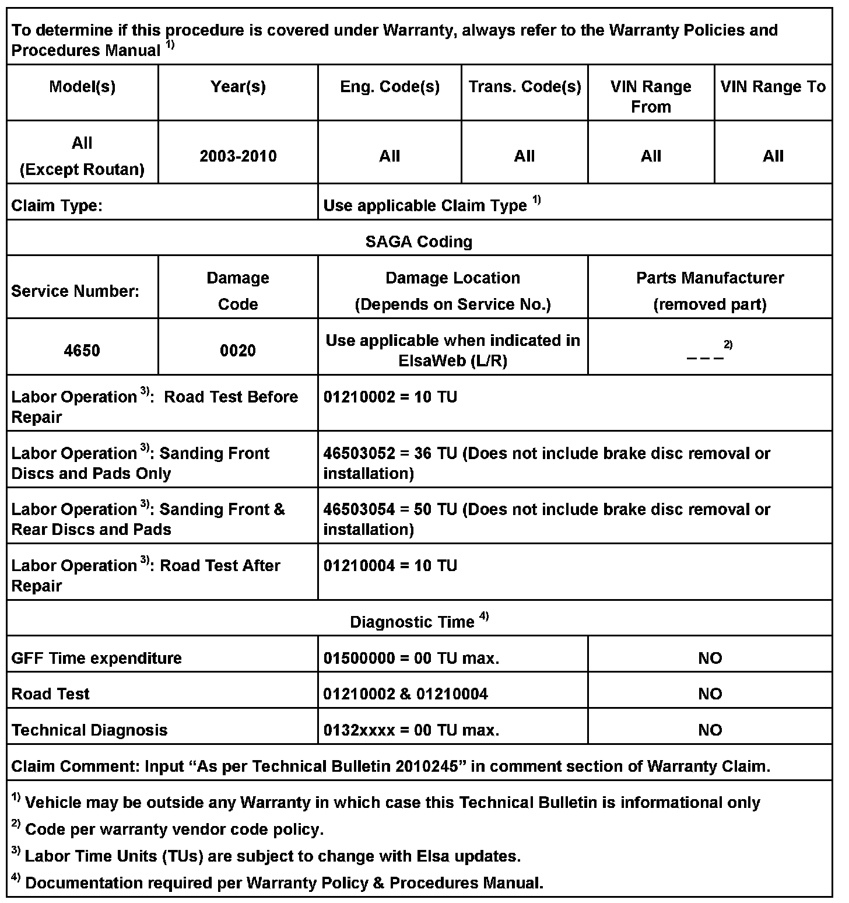
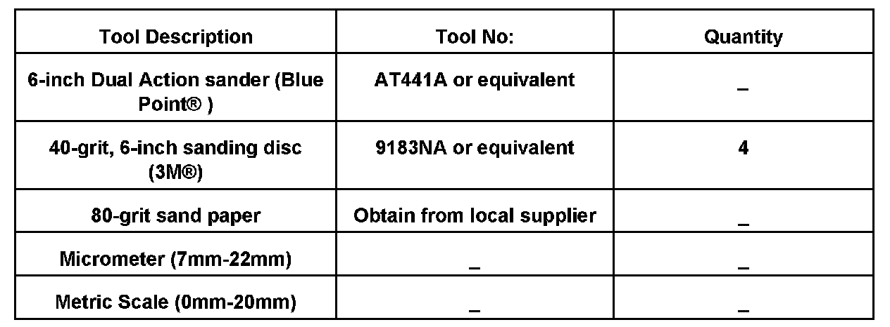

Brakes - Vibration During Braking
46 08 05Oct. 30, 2008
2010245 Supersedes T.B. Group 46 number 07 02 dated Jun. 11, 2007 due to removal of Routan applicability.

Vehicle Information
Condition
Customer States Vibration When Braking
Technical Background
Vibration when braking may be due to brake disc corrosion protection which has not been completely removed by normal braking.
Tip:
Type of vibration covered in this Technical Bulletin must be corrected within the first 6 months or 6000 miles of vehicle service.
Production Solution
No production change required.
Service
Vehicle Inspection
NOTE:
Abide by ALL traffic laws and be mindful of the vehicles around you while operating the vehicle.
^ Check and adjust tire pressure.
^ Accelerate vehicle to greater than 55 MPH.
^ Apply brake firmly.
Tip:
Vehicles requiring front disc cleaning will exhibit vibration.
WARNING:
For vehicle equipped with Electronic Parking Brake (EPB), DO NOT APPLY PARKING BRAKE WHILE VEHICLE IS IN MOTION.
Affected rear discs will have uneven color across the friction surface.
On vehicles with EPB, this will determine if rear discs need to be sanded.
The following steps apply to vehicles without Electronic Parking Brake (EPB):
^ Accelerate vehicle to 30 MPH.
^ Carefully apply parking brake.
If vibration IS observed:
Clean all front and rear brake discs.
If vibration IS NOT observed:
Clean only front discs.
Disassembly & Inspection
^ Remove wheels, disassemble brake calipers and remove brake disc. See appropriate Repair Manual for vehicle you are servicing.
^ Paint mark or scribe brake discs for reinstallation (Left/Right).
^ Paint mark brake pads for reinstallation (Left/Right, Inner/Outer).
^ Inspect all brake components for damage from outside influences.
^ Using micrometer, measure brake disc thickness. See appropriate Repair Manual in ElsaWeb for minimum brake disc thickness.
Brake Disc Surface Cleaning

Remove remaining corrosion protection coating as follows:
^ Sand brake disc surfaces until clean metal is visible using 40-grit sanding disc in a clockwise direction using leading edge of sanding disc (1-2 minute per surface).

Replace sanding disc prior to moving to next brake disc surface.
To achieve a crosshatch pattern:
^ Repeat sanding process using 80-grit sanding disc in a clockwise direction using trailing edge of sanding disc.
Replace sanding disc prior to moving to next brake disc surface.
Clean all brake disc friction surfaces using soap and water solution.
Tip:
Brake discs must be free of dust and particles left behind due to the sanding process.
Deglaze and Clean Brake Pads

^ Place 80-grit sand paper on flat hard surface.
^ Carefully sand brake pads until the surface glazing is removed.
^ Measure brake pad thickness using metric scale.
If any brake pad is equal to or less than 50 percent of original thickness of new brake pads (excluding backing plate):
^ Replace all 4 brake pads on axle you are servicing.
Tip:
See appropriate Repair Manual in ElsaWeb for new brake pad thickness dimensions.
Reassembly
^ Install brake discs, brake pads, brake calipers and wheels. See appropriate Repair Manual in ElsaWeb for vehicle you are servicing.
^ Road test vehicle to confirm vibration concern is corrected.

Warranty

Required Parts and Tools
No Special Parts required.
Additional Information
All part and service references provided in this Technical Bulletin are subject to change and/or removal. Always check with your Parts Dept. and Repair Manuals for the latest information.